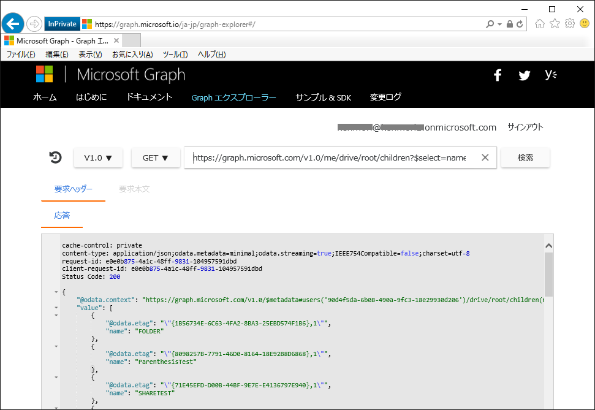
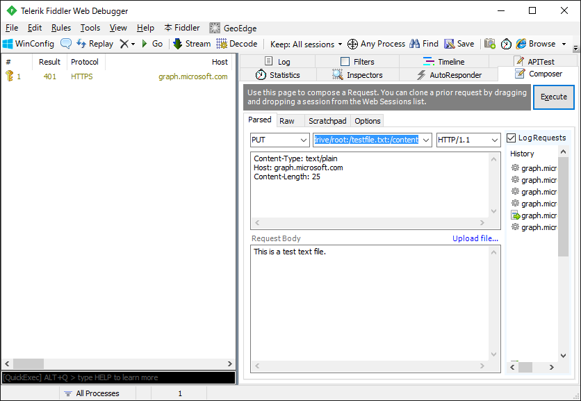
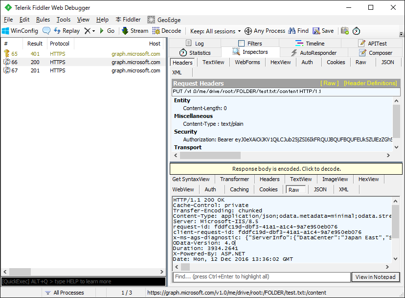
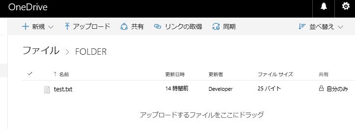

(※ 2016 年 12 月 13 日に Japan Office Developer Support Blog に公開した情報のアーカイブです。)
こんにちは、Office Developer サポートの森 健吾 (kenmori) です。
今回の投稿では、Microsoft Graph を使用した開発に便利なツールをご紹介します。
Microsoft Graph は 1 つのエンドポイントを介して複数の API を Office 365 およびその他の Microsoft クラウド サービスから公開するものです。
概要については以下のサイトをご参考にしてください。
タイトル : Microsoft Graph の概要
アドレス : https://graph.microsoft.io/ja-jp/docs
1. Graph Explorer
Microsoft Graph のエンドポイント (https://graph.microsoft.com/) 配下の REST API を試すことができます。
タイトル : Graph エクスプローラー
アドレス : https://graph.microsoft.io/ja-jp/graph-explorer
まずは、このツールを使用して Microsoft Graph に慣れることをお勧めします。

サイン インの有無
・[サインイン] をしない状態では、デモ テナントの情報を参照する REST API を試すことができます。
・[サインイン] をクリックして、Graph Explorer をアプリとして承諾し (*1) ログインすると、サインインしたユーザーのアクセス権でそのユーザーのテナントに対して更新系も含めた処理を実行できます。
(*1) 使用できる REST API の種類は、承諾画面に出てきた機能のみです。
HTTP メソッド
・選択できる HTTP メソッドは以下の 4 種類が選択できます。
GET ・・・ 閲覧
POST ・・・ 追加
PATCH ・・・ 更新
DELETE ・・・ 削除
※ただし、一部 API では上記のメソッド以外も使用することがありますので、その際は Graph Explorer では使用できません。
アドレス
Microsoft Graph のエンドポイント (htps://graph.microsoft.com/) 配下のみが、本アプリケーションでテストできる範囲となります。
統合以前の Office 365 REST API では、多様なエンドポイントを使用することになるため本ツールは使用できません。
手順
以下の手順では、自分の OneDrive for Business ライブラリに存在するファイルの一覧を取得します。
1-1) Graph Explorer にアクセスします。
1-2) [サインイン] をクリックします。
1-3) ユーザー名とパスワードを入れてログインします。はじめて使用する場合は、さらに [信頼する] をクリックしてください。
1-4) v1.0 と GET はそのままにします。
1-5) 以下のようなアドレスを入力します。
https://graph.microsoft.com/v1.0/me/drive/root/children?$select=name
参考 :
・https://graph.microsoft.com/v1.0/me/ は Microsoft Graph のエンドポイント
・/drive は OneDrive API
・/root はルート フォルダ
・children は直下のアイテムを取得するプロパティ
・$select=name は name のみを選択する OData メソッド
1-6) ルート フォルダ直下のフォルダやファイル一覧が取得できたことを確認します。
参考情報
タイトル : Office Dev Show - Episode 41 - The New Microsoft Graph Explorer
アドレス : https://channel9.msdn.com/Shows/Office-Dev-Show/Office-Dev-Show-Episode-41-The-New-Microsoft-Graph-Explorer
2. Fiddler
Graph Explorer でカバーできない API (エンドポイント、HTTP メソッド) を試す場合は、Fiddler を使用する方法が考えられます。
もちろん Postman など、お気に入りのツールがあれば、それでも構いません。
Fiddler は、一般的にトラブルシューティングの用途でアプリケーションの HTTP トレースを取得するために使用されますが、HTTP デバッガーや開発ツールとしても利用できます。今回は Fiddler の Composer という機能を使用します。
下記に紹介する手順は、類似のツールを使用する場合にも、役立つ手順になると思いますのでご確認ください。
手順
2-1) Fiddler を起動します。
2-2) 画面右ペインで [Composer] タブをクリックします。
2-3) [Options] タブをクリックして、”Fix Content-Length header” にチェックを入れます。
2-4) [Parsed] タブに戻ります。
2-5) 以下の画面キャプチャのように各値を入力して [Execute] を実行します。
1 | Method : PUT |

2-6) 画面左ペインで 401 エラーが返っているのを選択します。
2-7) 画面右で [Inspectors] タブをクリックします。
2-8) 応答本文を確認して、Access Token が指定されていないことがエラーの原因であることを確認します。
1 | { |
2-9. 別の投稿で取得した Access Token を使用して再度実行します。
1 | Method : PUT |

2-10. ファイルが作成されたことが確認できます。

いかがでしたでしょうか。今回の投稿は、開発スタイルのみのご紹介となります。
ご参考にしていただけますと幸いです。
本情報の内容 (添付文書、リンク先などを含む) は、作成日時点でのものであり、予告なく変更される場合があります。